Introduction to Deep Learning and Regression Workshop#
In this session we are going to see
A quick introductory session on what Deep Learning is and how it has been applied in Astronomy.
what regression is and some metrics
how we set up a model to make predictions.
Setup#
import numpy as np
import pandas as pd
import matplotlib.pyplot as plt
from IPython.display import display, HTML
display(HTML("<style>.container { width:100% !important; }</style>"))
import requests
url = "https://raw.githubusercontent.com/AstroStat-Academy/assets-public/main/colab/clone_and_cd_colab.py"
colab = requests.get(url).text
exec(colab)
url = "https://raw.githubusercontent.com/AstroStat-Academy/assets-public/main/styles/plot_style.py"
style = requests.get(url).text
exec(style)
Why Deep Learning is cool#
It is not, we are geeks, and that's the truth.
However … we do live in the era of “Big Data”:
{kind=link}
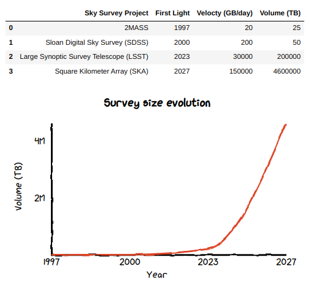
|
Figure 1. Current and projected survey size evolution. |
We cannot expect to humanly inspect these data and derive the intuition for the rules which categorize them.
\(\rightarrow\) We have to leverage on:
the large number of examples
algorithms that can abstract arbitrarily complex rules
A bit of history#
The history of NNs is troubled. Arguably, NNs have been originally inspired by biological neurons.
1943 \(\rightarrow\) Warren McCulloch (neurophysiologist) and Walter Pitts (mathematician)
Simplified computational model of how biological neurons might work together in animal brains
{kind=link}
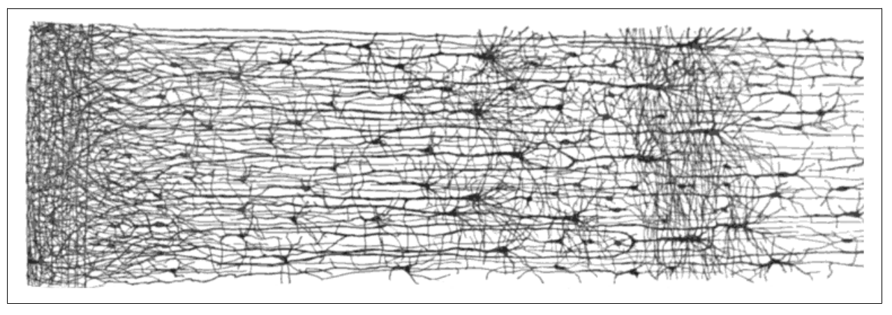
|
Figure 3. Neuron layers in the human cortex. (Adapted from Figure 10-2 of Gerone A. 2017) |
mid’40s\(-\)’60s \(\hspace{0.6cm}\) \(\rightarrow\) Follows some interest and development of early models (e.g. Perceptron)
’70s\(-\)mid’80s \(\hspace{0.6cm}\) \(\rightarrow\) NNs cannot scale efficiently, they get disregarded
mid’80s\(-\)mid’90s \(\rightarrow\) The invention of backpropagation allows to train complex NNs, but …
mid’90s-2010s \(\hspace{0.5cm}\) \(\rightarrow\) Other techniques look simpler, more powerful (e.g. SVM)
2010s\(-\)present \(\hspace{0.3cm}\) \(\rightarrow\) Second reinassance of NNS, mostly due to:
huge quantity of data availability
powerful GPU cards (bad Bitcoin, bad! Gaming: good boi!)
improvement of training algorithms
virtuous circle of funding and progress
{kind=link}
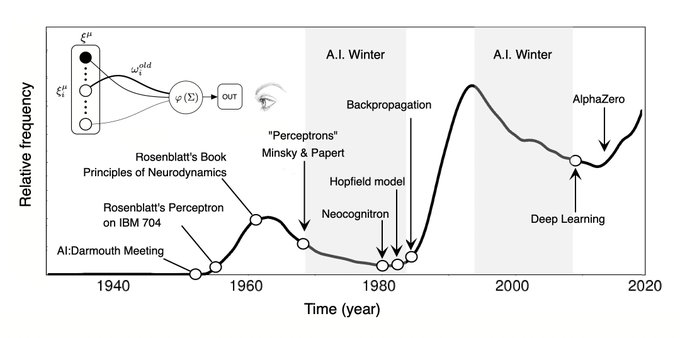
|
Figure 4. The tormented history of NNs. (From here) |
Today the association to biological NNs is obsolete, and possibly even detrimental (see sigmoid activation function).
Deep Learning in Astronomy#
Astronomy got a late start to the DL race ( prejudice against the “black box” vs. old school statistics? ).
However …
Astronomy is the perfect DL lab because it offers:
tough problems to solve
large data
In fact, Deep Learning publications are exploding in Astronomy!
{kind=link}
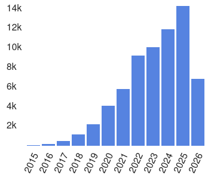
|
Figure 5. Number of refereed astronomy papers containing the text "Deep Learning" in their abstracts (~66.3K). (From NASA ADS) |
Some notable examples
Galaxy Classification
Dieleman et al. (2015), MNRAS, 450, 1441 \(-\) calculate probabilities for the 37 Galaxy Zoo possible answers
training: classification of 61,578 JPEG images from SDSS with GZ labels
architecture: standard CNN
{kind=link}
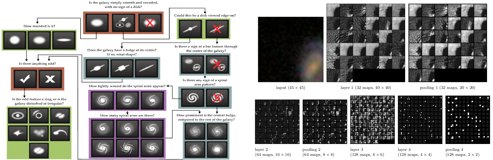
|
Figure 6. Left $-$ Galaxy Zoo classification tree (From Willet et al. 2013). Right $-$ Activation of the CNN layers (From Dieleman et al. 2015). |
Ackerman et al. 2017, MNRAS, 479, 415 \(-\) identify mergers
training: classification of ~4000 JPEG images from SDSS with GZ labels
architecture: CNN with transfer learning
{kind=link}
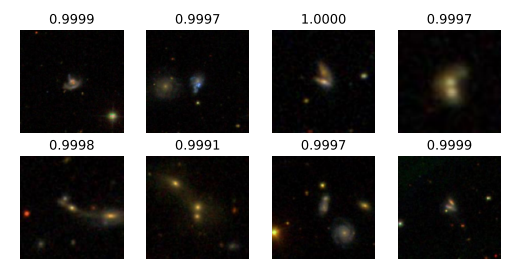
|
Figure 7. Some galaxy pairs confidently identified as mergers. (From Ackerman et al. 2017) |
Serendipitous Detection
Lanusse et al. 2018, MNRAS, 473, 3895 \(-\) spot gravitational lenses
training: 20,000 LSST-like observations
architecture: CNN + ResNet
{kind=link}
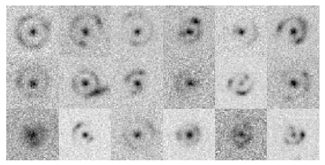
|
Figure 8. Some images correctly identified as hosting lenses. (From Lanusse et al. 2018) |
Image Reconstruction
Schawinski et al. 2017, MNRAS, 467, 110 \(-\) image denoising
training: 4550 nearby SDSS galaxies
architecture: GAN
{kind=link}
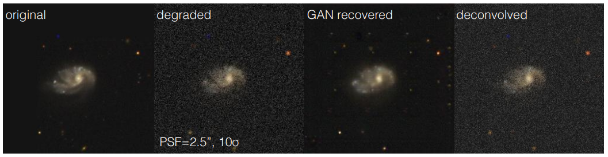
|
Figure 9. Degraded image details reconstructed by a GAN. (From Schawinski et al. 2017) |
Cosmological Simulations
Rodríguez et al. 2018, ComAC, 5, 4 \(-\) create computationally cheap cosmological simulations
training: 10 independent L-PICOLA simulation boxes
architecture: GAN
{kind=link}
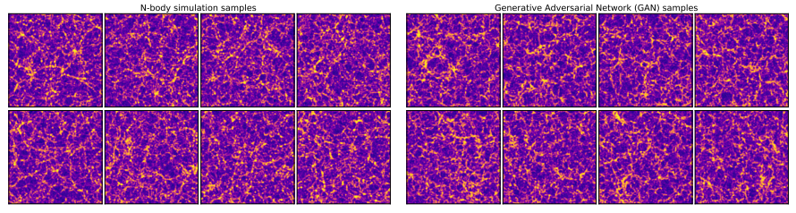
|
Figure 10. Comparison between the results of a N-body simulation (left) and from a GAN (right). (Adapted from Rodríguez et al. 2018) |
Source Density Predicition
Xu et al. 2023, ApJ, 950, 2 \(-\) get a census of Giant Molecular Clouds (GMCs) from their \(N_H\) column-density images
training: 7179 high-res MHD simulations of clouds
architecture: Diffusion Models
{kind=link}
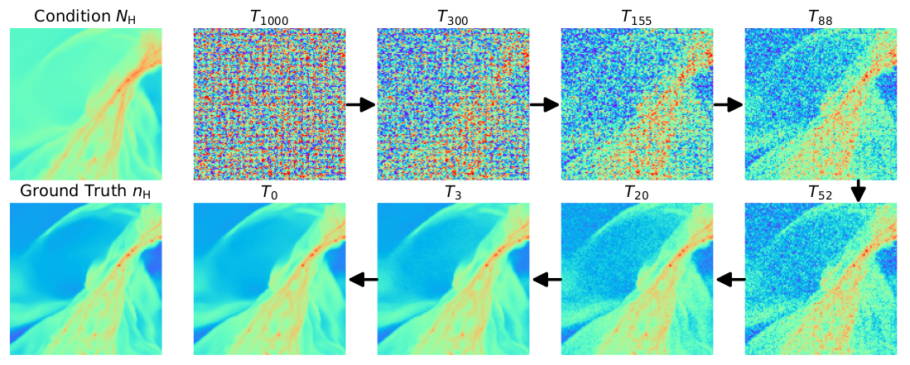
|
Figure 11. The true GMC number density (bottom-left) is iteratively reconstructed, conditioned on the line-of-sight $N_H$ column density (top-left) . (From Xu et al. 2023, ApJ, 950, 2) |
Inference of Cosmological Parameters
Jeffrey et al. 2025, MNRAS, 536, 2 \(-\) constrain \(𝑤\)CDM cosmological parameters using SBI on Dark Energy Survey weak-lensing maps
training: 791 full-sky \(N\)-body simulations
architecture: Simulation Based Inference + NN compression
{kind=link}
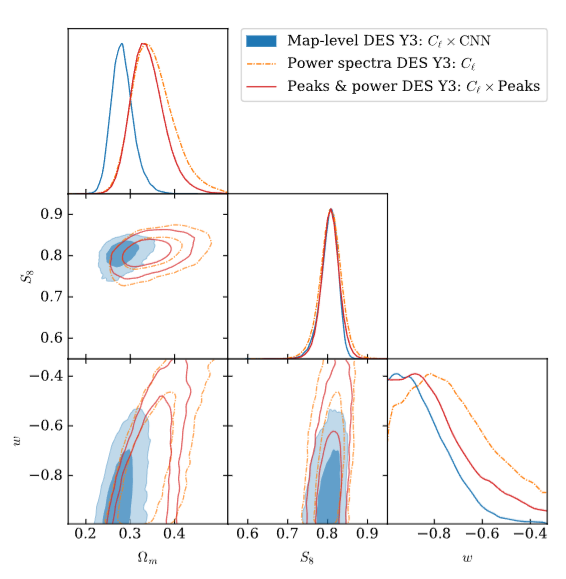
|
Figure 12. Corner plot of the posteriors for Ωm, S8, and w. (From Jeffrey et al. 2025) |
Neural Networks (NN) Components#
Generic Architecture and Neurons#
{kind=link}
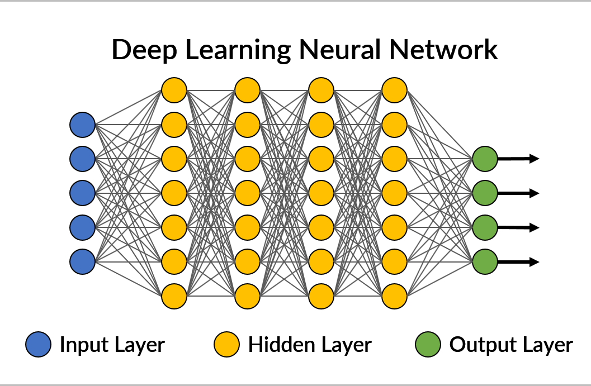
|
Figure 13. A simple, generic feedforward deep neural architecture. Neurons of a layer might be connected to al the neurons of the neighboring layers, like in this example (fully-connected layers), or not. (Adapted from here) |
Nomenclature
Neuron: A simple element in a network, carrying 1 value.
Layers: A collection of neurons activated simultaneously.
Layers are represented differently depending on the architecture.
E.g., fully-connected layers (as in the Figure above), appear as vertical stripes of neurons.
input layer: the data
hidden layers: the internal layers (”hidden” from the point of view of the NN user)
output layer: the variable(s) of interest (e.g., class(es) or \(y\))
E.g., if we provide an image as input, each pixel is 1 neuron of the input layer.
Contemporary NNs contain hundreds to thousands of layers, with millions to billions of neurons.
Weights and Biases#
The core of the functioning of any NN is how the information flows through a neuron.
{kind=link}
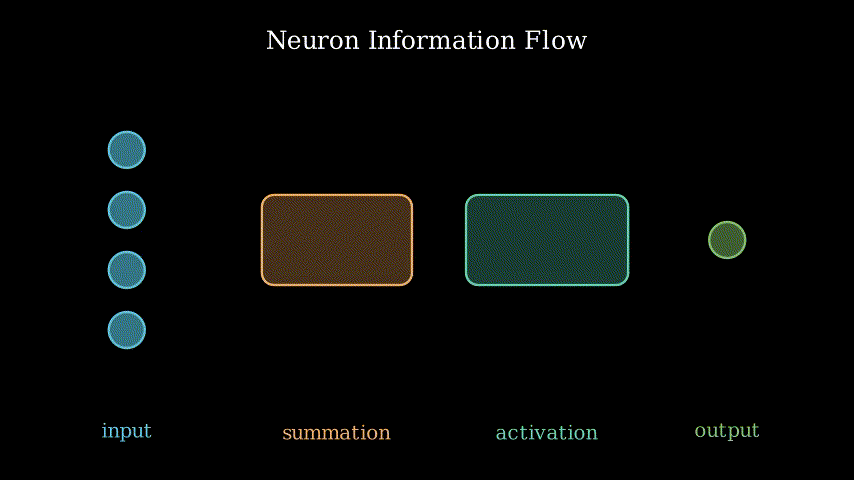
|
Figure 14. How the information is propagated through a neuron. (Image by P. Bonfini, Astrostatistics in Crete, made with Manim, free reproduction) |
The first stage is linear:
A neuron takes all the inputs (values) x\(_i\) directed into it, multiplies each of them by a different weight (\(w_i\)), and takes the sum.
Then, it adds a bias (\(b\)).The second stage is (usually) non-linear:
The summation is passed to an activation function.
The activation function acts as a filter, basically deciding when and how the information shall flow.
The ouput of a single neuron is therefore:
IMPORTANT
The weights and biases are the elements that are fit during the training of the model!
Fitting a model == optimizing all the weights and biases within the NN, in order to approximate the desired output \(y\) given a corresponding example \(x\).
Activation Functions#
Activation functions are what make NNs so efficient as universal tools.
They introduce non-linearities \(\rightarrow\) a NN can create an arbitrarily complex model.
They can be basically any filter-like function, but they better posses [some of] these features:
computationally inexpensive \(\leftarrow\) hence simple, since they get executed at each neuron
zero-centered \(\leftarrow\) not to shift values towards a preferential direction
differentiable \(\leftarrow\) because NNs work with Backpropagation
avoid vanishing when chained \(\leftarrow\) more correctly, we need to avoid vanishing gradients
(see Gradient Descent and Loss, and Glorot & Benjo 2010)
{kind=link}
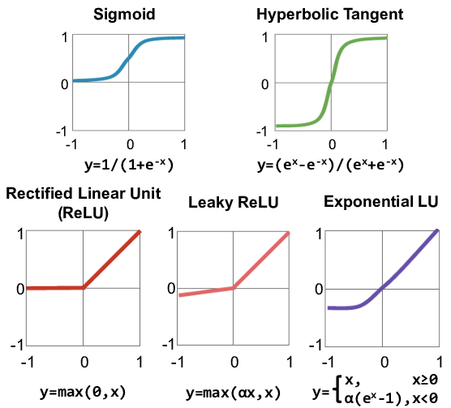
|
Figure 15. A collection of commonly used activation functions (Adapted from here) |
NN Architecture Variants#
NN come in countless architectures, and even trying to classify them is a tough task …
{kind=link}
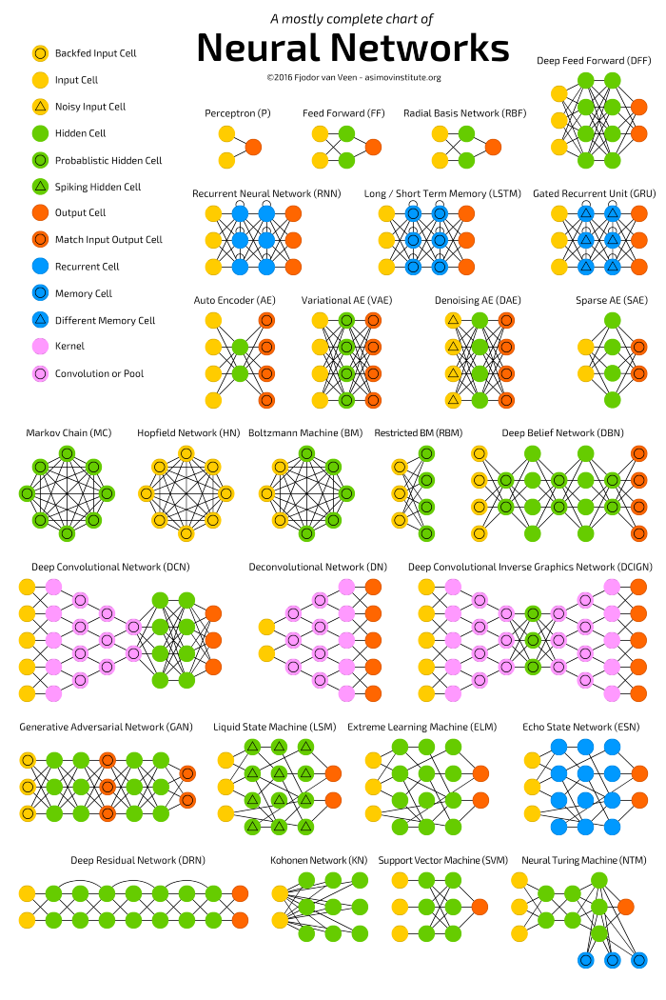
|
Figure 16. A reasonably complete scheme of basic NN architectures. (Image credit: Fjodor van Venn) |
Training NNs#
As mentioned above:
training a NN = optimize its weights and biases
in order to produce the desired output (class or values) given a corresponding input.
The details of the training method depends on the DL learning problem:
supervised: we have labelled examples
unsupervised: no labeles are available
reinforced: the examples are associated to a “reward”
In this notebook, we will focus on the supervised case to illustrate the NN mechanics:
\(\rightarrow\) Let’s assume we have some predicting variables \(X\), and labels \(y\).
How can we tell the network in which way it shall modify weights (and biases)?
Let’s break down the NN rationale:
We initialize the weights to some arbitrary value
We take a sub-sample (batch) of the data \(X\), \(X_{batch}\)
We propagate \(X_{batch}\) through the network, obtaining a predicted \(\hat{y}_{batch}\)
We assess the error between \(\hat{y}_{batch}\) and the true \(y_{batch}\)
We need to backpropagate back the information about the difference
We need to update the weights in the right direction
Repeat from step 2 untill all data are used
(Repeat from 2 for multiple epochs)
The critical steps are #4, #5 and #6.
Error Function, Gradient Descent and Backpropagation#
Let’s consider an errorr (a.k.a. loss, or cost) function:
which assesses the intensity of the error. For example, we might adopt: \(E (\hat{y}, y) = {1\over2}(\hat{y} - y)^2 \).
To be precise, \(\hat{y}\) is itself a function of the input \(\boldsymbol{x}\), and of the NN parameters \(\theta\) (all the \(w\) and \(b\) of each node):
therefore:
Our objective: Minimize the error by finding the optimal set \(\hat{\theta}\), i.e.: $\( \hat{\theta} = \min_{\theta} E(\boldsymbol{x}, y, \theta) \)$
A useful consideration
The gradient of \(E\) with respect to \(\theta\), i.e. \(\nabla_{\theta} E (\boldsymbol{x}, y, \theta)\), is a vector roughly pointing towards the minimum of \(E\):
import matplotlib.pyplot as plt
import numpy as np
def E(theta): return theta**2
def dE_dtheta(theta): return 2*theta
thetas = np.linspace(-10, 10, 400)
theta = -9
'''First guess for the parameter''';
eta = 0.18
'''Learning rate: try to change this to small/large values (e.g., 0.08, or 1)''';
plt.figure(figsize=(8, 4))
plt.title('Gradient Descent')
plt.plot(thetas, E(thetas), c='grey', lw=3, zorder=-1)
for i, color in enumerate(['C0', 'C1', 'C2', 'C3']):
plt.scatter(theta, E(theta), s=100, c=color, label=r'$\theta$'+str(i))
#
theta_prime = theta - eta*dE_dtheta(theta)
plt.arrow(theta, E(theta), theta_prime - theta, 0, lw=3, head_width=2, head_length=0.2, fc=color, ec=color, length_includes_head=True)
plt.plot([theta_prime, theta_prime], [E(theta), E(theta_prime)], '--', lw=3, c='darkgrey', zorder=-1)
plt.text((theta + theta_prime) / 2, E(theta) + 1, r'$\nabla_{\theta} E$', ha='center', va='bottom')
#
theta = theta_prime
plt.gca().spines['top'].set_visible(False)
plt.gca().spines['right'].set_visible(False)
plt.xlabel(r'$\theta$', fontsize=14)
plt.ylabel(r'E($\theta$)', fontsize=14)
plt.legend(loc='upper left', bbox_to_anchor=(1,1))
plt.show()
We can therefore update the weights by adding a vector proportional to \(\nabla_{\theta} E\):
where the proportionality constant \(\eta\) is called learning rate (LR) because it regulates how fast we shall proceed towards the mininum
(and possibly overshoot it, if \(\eta\) is too large).
This is the Gradient Descent optimization.
In-class Exercise: In the above code block, try to change the value of eta to see what happens when the update is too fast or too slow
Calculating the gradient
We have \(\nabla_{\theta} E~\):
where the \(\theta_i\) are all the weigths and biases along the network.
.. BUT … how do I exactly calculate each \(\frac{\partial E}{\partial \theta_i}\) ?
For example, consider the simple network:
2 input neurons
2 hidden layers, each with 2 neurons
2 output neurons
{kind=link}
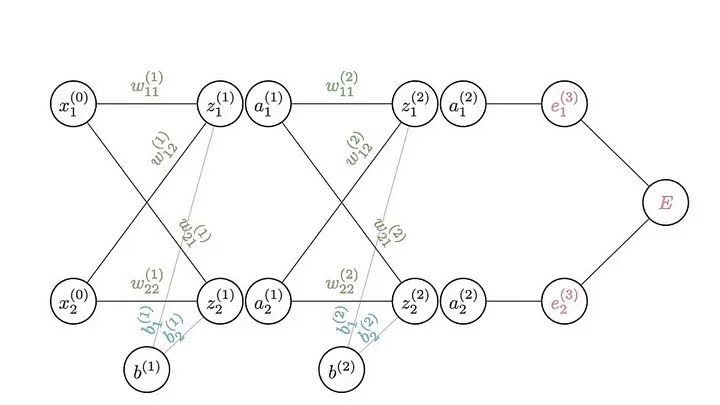
|
Figure 17. All the parameters of a 2-hidden-layer NN. (From this amazing graphical explanation by Brent Scarff) |
where, in this notation:
\( z = \sum{\textbf{w}\cdot{}\textbf{x} + b} \)
is just the neuron value before the activation function\( a = f(z) \)
is just the neuron value after the activation function
How do I calculate, e.g.: $\( \frac{\partial E}{\partial w^{(2)}_{11}} ~~~~~ ?\)$
\(\rightarrow\) Chain rule of derivatives !
{kind=link}
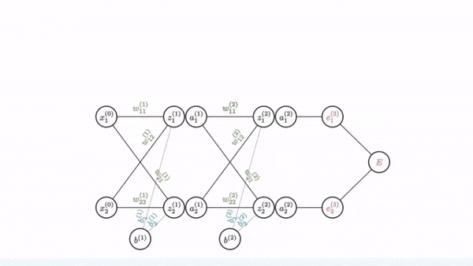
|
Figure 18. Calculating the gradient at a specific position in the NN. (Image credit: Brent Scarff) |
You can imagine propagating the chain rule back to the original input: all the steps are either linear or passing through a differentiable activation function!
With that, we now how to update any \(w\) and \(b\):
This is the Backpropagation technique.
[-] Strongly suggested read: This blog by Brent Scarff.
Optimization Algorithms#
There is a number of different optimizers (such as momentum optimization, AdaGrad, RMSProp, etc).
But Adam is arguably the best-performing optimizer on average:
quite robust with respect to the choice of hyperpars
usually works with default hypepars
\(\rightarrow\) Safe choice!
Reading material
At this page you will find graphical explanations of these and more optimizers as well as their mathematical formulations.
Learning Curves#
In DL, it is common to cycle the training on the same data \(N\) times \(-\) Each pass is called “Epoch”.
Training rationale with N_epochs epochs, and N_batches batches:
0. set epoch = 0
1. Train on batch 1, update gradient
Continue train on batch 2, update gradient
Continue train on batch 3, update gradient
.. .
Continue train on batch N_batches, update gradient
3. epoch += 1
(epoch completed)
4. if epoch <= N_epochs: continue from 1 else stop
NOTE: This introduces bias towards the training data, but it usually more than compensated by a longer gradient descent.
We can display the values of the Loss as a function of “time” \(\rightarrow\) Learning Curves (Validation Curves)
{kind=link}
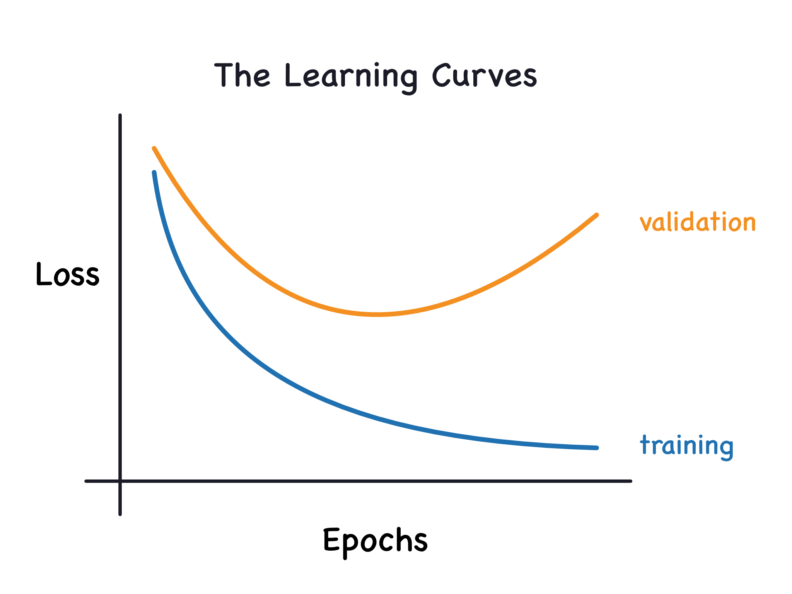
|
Figure 19. Learning curves for train and validation set. (From here) |
We can use them to spot overfitting (train goes much better than validation) or underfitting (training shows trend to improve):
{kind=link}
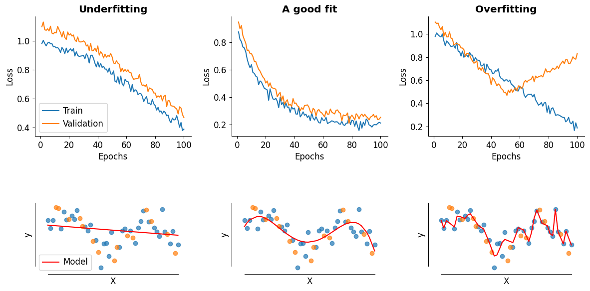
|
Figure 20. Learning curves for train and validation set. |
| Underfitting | A good fit | Overfitting |
|---|---|---|
| The training set shows a downward trend at the right edge: maybe a few more epochs could yield a better performance. |
Training and validation converge and they flatten. |
The validation curve cannot keep up with the training curve. |
What you will see in the Workshops#
You will explore 3 applications of DL networks:
Regression with NN (fully-connected layers)
Simulation Based Inference
Diffusion models
Supervised Learning: A simple Deep NN#
We will enter the DL coding realm via a simple Regression problem.
{kind=link}
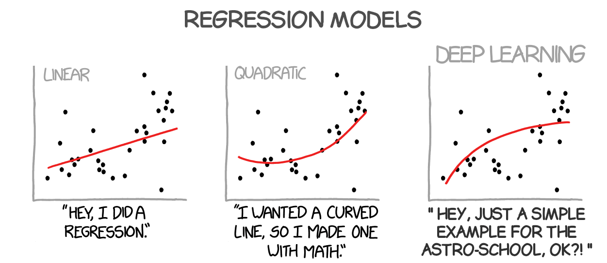
|
Figure 21. The struggle of Regression. (Adapted from xkcd) |
{kind=link}
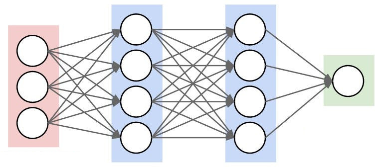
|
Figure 22. A simple Deep NN can be used as a regressor. (From here) |
Libraries#
There are several libraries that implement Deep Learning routines in Python.
For the Woskshops we will focus on Tensorflow (\(\rightarrow\) via Keras), and PyTorch.
Tensorflow (Google): does the heavy lifting for us
pre-defined functions and layers
automatically computes the derivatives (for Backprop!)
Keras (François Chollet): is an API (Application Programming Interface) \(-\) it provides higher-level functionalities for DL libraries (such as Tensorflow, PyTorch)
PyTorch (META & Linux foundation): is a high-level API that builds upon optimised, low-level implementations of deep learning algorithms and architectures (supports GPU, uses tensor as fundamental data type).
Both Keras and PyTorch offer 2 API flavors:
Sequential
PROs: Simpler (stack of layers)
CONs: Single-input, single-output
Functional
PROs: More flexible, multi-input, multi-output
CONs: Steep learning curve, need to understand tensor programming
Regression with Deep Learning#
What is regression ?#
Modeling problems where the output is a continuous numeric value.
Linear regression and least squares#
A linear regression model will try to predict the single value of the dependent variable \(y\) given the independent variable \(x\), with the most generic form being:
where \(x\) corresponds to the input variable(s) and \(β\) is an array of parameters.
The simplest linear model we can think of is a line:
where \(β_0\) and \(β_1\) have the usual meaning of intercept and slope of a line.
Generalizing a bit, for an input vector \(x^T = (x_1, x_2, ..., x_N)\), where \(N\) is the total number of observations (or samples), the linear model to predict the real-valued output \(y\) is:
To find these parameters we use the Ordinary Least Squares approach, i.e. we try to minimize the residual sum of the squares between the observations and the predictions by the model (i.e. the loss or cost function):
The more general linear regression#
Linear regression refers to modeling functions that are linear with respect to the parameters (coefficients) and not with respect to the variables! For example, the function:
describes a linear problem as long as the sub-functions \(g_i(x)\) do not depend on any of the parameters \(β_i\). This is not the most generic formulation of the linear regression but we are going to use this form in the following applications.
On metrics … or how well can we do#
Accuracy is a measure for classification not regression
We cannot calculate accuracy for a regression modelby Jason Brownlee Regression Metrics for Machine Learning
In regression we are dealing with continuous values. Therefore, it is actually impossible to predict the exact same values. The idea is to get an estimate of how close the predictions are to the expected values.
We are going to refer only a few of the available metrics in sklearn. In the following \(y\) refers to the dependent values while \(\hat{y}\) to the predicted values.
–> Mean Squared Error (MSE)
It is actually the cost function of the Ordinary Least Squares (check \(RSS(β)\) above). The units returned in this case are squared. Best score is 0.
–> Root Mean Squared Error (RMSE)
It returns the square root of MSE so that the units match the units of the target value (so better interpretation). Best score is 0.
–> Mean Absolute Error (MAE)
It is less sensitive to large errors when compared to (R)MSE. The score is in units of the target value.
Comment: Although arithmetically the best scores for (R)MSE and MAE is 0 this cannot be the case in real-life problems. Instead a baseline model has to be determined and calculate its score. Then, any model that can achieve a score better that the baseline model is accepted as a skillful model.
–> R2 (coefficient of determination)
where \(\bar{y} = \frac{1}{n}\sum_{i=1}^N y_i\).
It represents the proportion of variance (of y) that has been explained by the independent variables in the model. It provides an indication of goodness of fit and therefore a measure of how well unseen samples are likely to be predicted by the model, through the proportion of explained variance. Best possible score is 1.0 and it can be negative (because the model can be arbitrarily worse).
Application 1: Estimate SFR#
We will use data derived from the Heraklion Extragalactic Catalogue (HECATE; Kovlakas et al, 2021) which is an all-sky galaxy catalogue, containing about 200k galaxies (up to z=0.047, D≲200Mpc), and it offers positions, sizes, distances, morphological classifications, star formation rates, stellar masses, metallicities, and nuclear activity classifications.
In particular, we are going to use a dataset from the work of Kouroumpatzakis et al. 2023 where they estimate the Star Formation Rates (SFR) and stellar mass using model Spectral Enerny Distributions with a variety of parameters (IR photometry, extinction, and stellar populations).
Exercise 1:
Objective: Build a regression model to predict SFR
Task: For this follow these steps:
load and investigate the data
select features
pre-process the data
split data (train/validation/test)
build model (architecture with dense layers)
train the model
evaluate its performance
compare with baseline model and check results.
Loading and checking data#
import time
import keras
from keras.layers import Activation, Dropout, Flatten, Dense, Input, BatchNormalization,Conv3D, MaxPooling3D, Dense, Add, Activation
from keras.regularizers import l2
from keras.models import Model, Sequential
from keras.optimizers import Adam, SGD, Adagrad, RMSprop
from astropy.io import fits
from astropy.table import Table
from sklearn.linear_model import LinearRegression
from sklearn.model_selection import train_test_split
from sklearn.preprocessing import StandardScaler
from sklearn.metrics import mean_squared_error, mean_absolute_error, r2_score
from IPython.display import clear_output
class PlotLosses(keras.callbacks.Callback):
# NOTE: the current version can print only the first metric from the list provided
def on_train_begin(self, logs={}):
self.i = 0
self.x = []
self.losses = []
self.val_losses = []
self.losses2 = []
self.val_losses2 = []
self.fig = plt.figure()
self.logs = []
def on_epoch_end(self, epoch, logs={}):
self.logs.append(logs)
self.x.append(self.i)
self.losses.append(logs.get('loss'))
self.val_losses.append(logs.get('val_loss'))
self.losses2.append(logs.get( test_metrics[0] ) )
self.val_losses2.append(logs.get( f'val_{test_metrics[0]}' ))
# print(test_metrics[0] , logs.get( test_metrics[0] ), logs.get( f'val_{test_metrics[0]}' ))
# print(self.losses2)
self.i += 1
clear_output(wait=True)
plt.subplot(1,2,1)
plt.plot(self.x, self.losses2, label="Train",linestyle='-')
plt.plot(self.x, self.val_losses2, label="Validate",linestyle='--')
# plt.ylim(0,1)
plt.legend()
plt.xlabel('Epoch')
plt.ylabel(test_metrics[0])
plt.subplot(1,2,2)
plt.plot(self.x, self.losses, label="Train",linestyle='-')
plt.plot(self.x, self.val_losses, label="Validate",linestyle='--')
plt.legend()
plt.xlabel('Epoch')
plt.ylabel('Loss')
plt.tight_layout()
plt.show();
plot_losses = PlotLosses()
def sub_ploots(plots_cols, plots_array):
""" Automatic adjustment of subplots
Given the
plots_cols : plots per row (set manually)
plots_array : array from which the number of
individual subplots is derived
the output is given as
plots_cols : plots per row
plots_rows : number of necessary rows to create
"""
plots_unique = len((list(set(plots_array))))
plots_rows = int(np.ceil(plots_unique/plots_cols))
return plots_rows, plots_cols
# following this tutorial :https://learn.astropy.org/tutorials/FITS-tables.html
data_fits = fits.open('data/CIGALE_SFR.fits', memmap=True)
# printing some information
data_fits.info()
print('-----')
print(data_fits[1].columns)
Note on columns:
'sfr' : Star Formation Rate
'mstar' : Stellar Mass
'IRX' : IR excess ratio
'EBVs' : extinction
'LYoungOld' : ratio of luminosity of young to old populations
'NIR200' : JWST NIR-F200W
'MIRI2100' : JWST MIRI-F2100W
'W1' : WISE 3.4 μm
'W2' : WISE 4.6 μm
'W3' : WISE 12 μm
'W4' : WISE 22 μm
Printing the data table.
data_tab = Table(data_fits[1].data)
data_tab
Selecting features#
In this part we can select which features we want to keep and use to train our model. Feel free to choose any number of feature - keep in mind though NOT to select sfr and mstar as these are needed for the output (i.e. are the values we want to predict).
Task: select the features to work with
sel_features = [ ... ]
fig = plt.figure(figsize=(8,8))
rws, cls = sub_ploots(2, sel_features) # for subplots
for f in range(len(sel_features)):
f_name = sel_features[f]
ax = fig.add_subplot(rws, cls, f+1)
ax.set_title(f'Feature {f_name}')
ax.hist(data_tab[f_name], bins='auto', align='mid', density=True)
ax.set_xlabel('feature value')
ax.set_ylabel('counts or probability density')
plt.tight_layout()
plt.show()
len(data_tab)
and the data table with the selected features looks like …
data_tab[sel_features]
We convert table objects into numpy arrays:
values = data_tab[sel_features].as_array()
values = values.view((float, len(values.dtype.names)))
target = np.array(data_tab['sfr']).reshape(-1,1)
print('The values for selected features:')
print(values)
print()
print('The target quantity:')
print(target)
Split the sample and … ?#
Tasks:
split the sample into train/validation/test
what should you do before training the model?
from sklearn.model_selection import train_test_split
from sklearn.preprocessing import StandardScaler
# keep aside the test set first (coming from the future!)
X_train_full, X_test_un, y_train_full, y_test = train_test_split( ..., ... ,
test_size= ... ) #, random_state=42)
# split the remaining sample intro train and validation
X_train_un, X_valid_un, y_train, y_valid = train_test_split( ... , ... ,
test_size= ... ) #, random_state=42)
scaler = ...
X_train = scaler.fit_transform(...)
X_valid = scaler.transform( ... )
X_test = scaler.transform( ... )
print(f'> From {len(target)} sources:')
print(f' {len(X_train)} (train)')
print(f' {len(X_valid)} (validation)')
print(f' {len(X_test)} (test)')
print('\n> Statistics per feature:')
print(f'Mean: {scaler.mean_}')
print(f'Variance: {scaler.var_}')
print()
print(f' Target shape: {y_train.shape}') # print the shape of the output values
Time to build our model!#
# if you want you can add more output metrics!
# but keep in mind that the plot_losses will use the first one.
test_metrics = [ 'mean_squared_error', 'mean_absolute_error' ]
Tasks:
build a DL network with a number of dense layers - you can add as many layers as you want (probably you may need to return to correct this).
how many nodes the last layer should have?
model = Sequential()
model.add( Dense( ... , input_shape=X_train_full.shape[1:], activation='relu') )
model.add( Dense( ..., activation='relu') )
...
model.add( Dense(...) )
optzr = Adam(learning_rate=1e-4)
model.compile(loss='mean_squared_error', optimizer=optzr,
metrics = test_metrics)
model.summary()
Finally … train the model!#
Task: Fill the missing code to train the model
start_time = time.time()
history=model.fit( ... , ... ,
batch_size= ... ,
epochs= ... ,
validation_data=[ ... , ... ],
callbacks=[plot_losses],shuffle=True)
# to print history contents
# history.history
elapsed_time = time.time() - start_time
time.strftime("%H:%M:%S", time.gmtime(elapsed_time))
… and the moment of truth - evaluation#
Task: evaluate the model (take care on which dataset!)
evaluation = model.evaluate( ... , ... )
print(f"Loss value: {evaluation[0]:.2f}")
for m in range(len(test_metrics)):
print(f"{test_metrics[m]}: {evaluation[m+1]:0.2f}")
Comparing with a baseline model…#
Task: fill in the code to train and evaluate the baseline model.
lr_model = LinearRegression()
lr_model.fit( ... , ... )
y_hat_lr = lr_model.predict( ... )
mse = mean_squared_error( ... , ... )
mae = mean_absolute_error( ... , ... )
r2 = r2_score( ... , ...)
print(f"MSE: {mse:.2f}")
print(f"MAE: {mae:.2f}")
print(f"R2 : {r2:.2f}" )
Checking the predicitons#
Task: fill in the code to check the results.
y_hat = model.predict( ... )
r2 = r2_score( ... , ... )
min_ax, max_ax = np.min(y_test), np.max(y_test)
plt.plot(y_test, y_hat, '.', alpha=0.4)
plt.title( f'R2 = {r2:0.2f}', fontsize=20)
plt.xlabel('true', fontsize=16)
plt.ylabel('prediction', fontsize=16)
plt.xlim([min_ax, max_ax])
# 1-to-1 line:
xx = np.linspace(min_ax, max_ax, 100)
plt.plot(xx, xx, c="grey", linestyle='--')
plt.show()
Application 2: Estimate SFR and stellar mass#
Exercise 2:
Objective: Build a regression model to predict both SFR (‘sfr’) and stellar mass (‘mstar’).
Task: Follow the same steps with the previous exercise. You need to adjust the model to train and predict both values.
In this case we want to use all/part of the available features to estimate both the SFR (sfr) and the stellar mass (mstar).
Reminder of the available features:
print(data_fits[1].columns)
Task: Select the features to work with. The features we want to predict now are two, the SFR and the stellar mass.
sel_features = [ ... ]
pre_features = [ ... ]
values = data_tab[sel_features].as_array()
values = values.view((float, len(values.dtype.names)))
target = data_tab[pre_features].as_array()
target = target.view((float, len(target.dtype.names)))
print('The values for selected features:')
print(values)
print()
print('The target quantity:')
print(target)
Tasks:
split the sample into train/validation/test
what should you do before training the model?
# keep aside the test set first (coming from the future!)
X_train_full, X_test_un, y_train_full, y_test = train_test_split(... ,...,
test_size= ...) #, random_state=42)
# split the remaining sample intro train and validation
X_train_un, X_valid_un, y_train, y_valid = train_test_split( ... , ...,
test_size= ...) #, random_state=42)
scaler = ...
X_train = scaler.fit_transform( ... )
X_valid = scaler.transform( ... )
X_test = scaler.transform( ... )
print(f'> From {len(target)} sources:')
print(f' {len(X_train)} (train)')
print(f' {len(X_valid)} (validation)')
print(f' {len(X_test)} (test)')
print('\n> Statistics per feature:')
print(f'Mean: {scaler.mean_}')
print(f'Variance: {scaler.var_}')
print()
print(f' Target shape: {y_train.shape}') # print the shape of the output values
We define the metrics again here:
# if you want to add more output metrics
test_metrics = ['mean_squared_error', 'mean_absolute_error', ]
Task: Building our new model. Watch out the number of nodes at the very last step!
model = Sequential()
model.add( Dense(,,,, input_shape=X_train.shape[1:], activation='relu') )
model.add( Dense(..., activation='relu') )
...
model.add( Dense(...) )
optzr = Adam(learning_rate=1e-4)
model.compile(loss= 'mean_squared_error', # custom_loss,
optimizer=optzr,
metrics = test_metrics)
model.summary()
Task: Train the model
start_time = time.time()
history=model.fit( ... , ... ,
batch_size= ...,
epochs= ...,
validation_data=[ ... , ...],
callbacks=[plot_losses],shuffle=True)
# to print history contents
# history.history
elapsed_time = time.time() - start_time
time.strftime("%H:%M:%S", time.gmtime(elapsed_time))
Task: Compare with baseline model.
lr_model = LinearRegression()
lr_model.fit( ... , ...)
y_hat_lr = lr_model.predict( ... )
mse_lr = mean_squared_error( ... , ...)
mae_lr = mean_absolute_error( ... , ...)
r2_lr = r2_score(y_test, y_hat_lr, multioutput='raw_values')
print(f"Mean Squared Error (MSE): {mse_lr:.2f}")
print(f"Mean Absolute Error (MAE): {mae_lr:.2f}")
print(f"R2 (sfr): {r2_lr[0]:0.2f} ")
print(f"R2 (mstar): {r2_lr[1]:0.2f} ")
Task: check the results.
evaluation = model.evaluate( ... , ...)
print(f"Loss value: {evaluation[0]:.2f}")
for m in range(len(test_metrics)):
print(f"{test_metrics[m]}: {evaluation[m+1]:0.2f}")
print('------')
y_pred = model.predict( ... )
fig, axes = plt.subplots(1,2, figsize=(12,6))
axes = axes.flatten()
for i, ax in enumerate(axes):
r2 = r2_score( y_test[:,i] , y_pred[:,i])
print(i, r2)
min_ax, max_ax = np.min(y_test[:,i]), np.max(y_test[:,i])
ax.plot(y_test[:,i], y_pred[:,i], '.', alpha=0.4)
ax.set_title( f'R2 = {r2:0.2f} for {pre_features[i]}', fontsize=20)
ax.set_xlabel('true', fontsize=16)
ax.set_ylabel('prediction', fontsize=16)
ax.set_xlim([min_ax, max_ax])
min_ax, max_ax = np.min(y_test[:,i]), np.max(y_test[:,i])
# 1-to-1 line:
xx = np.linspace(min_ax, max_ax, 100)
ax.plot(xx, xx, c="grey", linestyle='--')
plt.show()
Solutions#
Application 1: Estimate SFR#
[Solution below]
sel_features = ['LYoungOld', 'IRX', 'EBVs', 'W1']
fig = plt.figure(figsize=(8,8))
rws, cls = sub_ploots(2, sel_features) # for subplots
for f in range(len(sel_features)):
f_name = sel_features[f]
ax = fig.add_subplot(rws, cls, f+1)
ax.set_title(f'Feature {f_name}')
ax.hist(data_tab[f_name], bins='auto', align='mid', density=True)
ax.set_xlabel('feature value')
ax.set_ylabel('counts or probability density')
plt.tight_layout()
plt.show()
# keep aside the test set first (coming from the future!)
X_train_full, X_test_un, y_train_full, y_test = train_test_split( values, target,
test_size=0.3) #, random_state=42)
# split the remaining sample intro train and validation
X_train_un, X_valid_un, y_train, y_valid = train_test_split( X_train_full, y_train_full,
test_size=0.2) #, random_state=42)
scaler = StandardScaler()
X_train = scaler.fit_transform(X_train_un)
X_valid = scaler.transform(X_valid_un)
X_test = scaler.transform(X_test_un)
print(f'> From {len(target)} sources:')
print(f' {len(X_train)} (train)')
print(f' {len(X_valid)} (validation)')
print(f' {len(X_test)} (test)')
print('\n> Statistics per feature:')
print(f'Mean: {scaler.mean_}')
print(f'Variance: {scaler.var_}')
print()
print(f' Target shape: {y_train.shape}') # print the shape of the output values
model = Sequential()
model.add( Dense(16, input_shape=X_train_full.shape[1:], activation='relu') )
# model.add( Dropout(0.3) ) # Dropout layer with 50% dropout rate
# model.add( Dense(64, activation='relu', kernel_regularizer=l2(0.01)),
model.add( Dense(64, activation='relu') )
model.add( Dense(32, activation='relu') )
model.add( Dense(1) )
optzr = Adam(learning_rate=1e-4)
model.compile(loss='mean_squared_error', optimizer=optzr,
metrics = test_metrics)
model.summary()
start_time = time.time()
history=model.fit(X_train, y_train,
batch_size=512,
epochs=15,
validation_data=[ X_valid, y_valid],
callbacks=[plot_losses],shuffle=True)
# to print history contents
# history.history
elapsed_time = time.time() - start_time
time.strftime("%H:%M:%S", time.gmtime(elapsed_time))
evaluation = model.evaluate(X_test, y_test)
print(f"Loss value: {evaluation[0]:.2f}")
for m in range(len(test_metrics)):
print(f"{test_metrics[m]}: {evaluation[m+1]:0.2f}")
lr_model = LinearRegression()
lr_model.fit(X_train, y_train)
y_hat_lr = lr_model.predict(X_test)
mse = mean_squared_error(y_test, y_hat_lr)
mae = mean_absolute_error(y_test, y_hat_lr)
r2 = r2_score( y_test , y_hat_lr)
print(f"MSE: {mse:.2f}")
print(f"MAE: {mae:.2f}")
print(f"R2 : {r2:.2f}" )
y_hat = model.predict( X_test)
r2 = r2_score( y_test , y_hat)
min_ax, max_ax = np.min(y_test), np.max(y_test)
plt.plot(y_test, y_hat, '.', alpha=0.4)
plt.title( f'R2 = {r2:0.2f}', fontsize=20)
plt.xlabel('true', fontsize=16)
plt.ylabel('prediction', fontsize=16)
plt.xlim([min_ax, max_ax])
# 1-to-1 line:
xx = np.linspace(min_ax, max_ax, 100)
plt.plot(xx, xx, c="grey", linestyle='--')
plt.show()
[End of solution]
Application 2: Estimate SFR and stellar mass#
[Solution below]
sel_features = ['LYoungOld', 'IRX', 'W1']
pre_features = ['sfr', 'mstar']
values = data_tab[sel_features].as_array()
values = values.view((float, len(values.dtype.names)))
target = data_tab[pre_features].as_array()
target = target.view((float, len(target.dtype.names)))
print('The values for selected features:')
print(values)
print()
print('The target quantity:')
print(target)
# keep aside the test set first (coming from the future!)
X_train_full, X_test_un, y_train_full, y_test = train_test_split( values, target,
test_size=0.3) #, random_state=42)
# split the remaining sample intro train and validation
X_train_un, X_valid_un, y_train, y_valid = train_test_split( X_train_full, y_train_full,
test_size=0.2) #, random_state=42)
scaler = StandardScaler()
X_train = scaler.fit_transform(X_train_un)
X_valid = scaler.transform(X_valid_un)
X_test = scaler.transform(X_test_un)
print(f'> From {len(target)} sources:')
print(f' {len(X_train)} (train)')
print(f' {len(X_valid)} (validation)')
print(f' {len(X_test)} (test)')
print('\n> Statistics per feature:')
print(f'Mean: {scaler.mean_}')
print(f'Variance: {scaler.var_}')
print()
print(f' Target shape: {y_train.shape}') # print the shape of the output values
model = Sequential()
model.add( Dense(128, input_shape=X_train.shape[1:], activation='relu') )
model.add( Dense(64, activation='relu') )
model.add( Dense(32, activation='relu') )
model.add( Dense(2) )
optzr = Adam(learning_rate=1e-4)
model.compile(loss='mean_squared_error', optimizer=optzr,
metrics = test_metrics)
model.summary()
start_time = time.time()
history=model.fit(X_train, y_train,
batch_size=512,
epochs=40,
validation_data=[ X_valid, y_valid],
callbacks=[plot_losses],shuffle=True)
# to print history contents
# history.history
elapsed_time = time.time() - start_time
time.strftime("%H:%M:%S", time.gmtime(elapsed_time))
from sklearn.linear_model import LinearRegression
from sklearn.metrics import mean_squared_error, mean_absolute_error
lr_model = LinearRegression()
lr_model.fit(X_train, y_train)
y_hat_lr = lr_model.predict(X_test)
mse_lr = mean_squared_error(y_test, y_hat_lr)
mae_lr = mean_absolute_error(y_test, y_hat_lr)
r2_lr = r2_score(y_test, y_hat_lr, multioutput='raw_values')
print(f"Mean Squared Error (MSE): {mse_lr:.2f}")
print(f"Mean Absolute Error (MAE): {mae_lr:.2f}")
print(f"R2 (sfr): {r2_lr[0]:0.2f} ")
print(f"R2 (mstar): {r2_lr[1]:0.2f} ")
Task: Check the results (with the linear modeling)
from sklearn.metrics import r2_score
evaluation = model.evaluate(X_test, y_test)
print(f"Loss value: {evaluation[0]:.2f}")
for m in range(len(test_metrics)):
print(f"{test_metrics[m]}: {evaluation[m+1]:0.2f}")
print('------')
y_pred = model.predict( X_test)
fig, axes = plt.subplots(1,2, figsize=(12,6))
axes = axes.flatten()
for i, ax in enumerate(axes):
r2 = r2_score( y_test[:,i] , y_pred[:,i])
print(i, r2)
min_ax, max_ax = np.min(y_test[:,i]), np.max(y_test[:,i])
ax.plot(y_test[:,i], y_pred[:,i], '.', alpha=0.4)
ax.set_title( f'R2 = {r2:0.2f} for {pre_features[i]}', fontsize=20)
ax.set_xlabel('true', fontsize=16)
ax.set_ylabel('prediction', fontsize=16)
ax.set_xlim([min_ax, max_ax])
min_ax, max_ax = np.min(y_test[:,i]), np.max(y_test[:,i])
# 1-to-1 line:
xx = np.linspace(min_ax, max_ax, 100)
ax.plot(xx, xx, c="grey", linestyle='--')
plt.show()
[End of solution]
###EOF